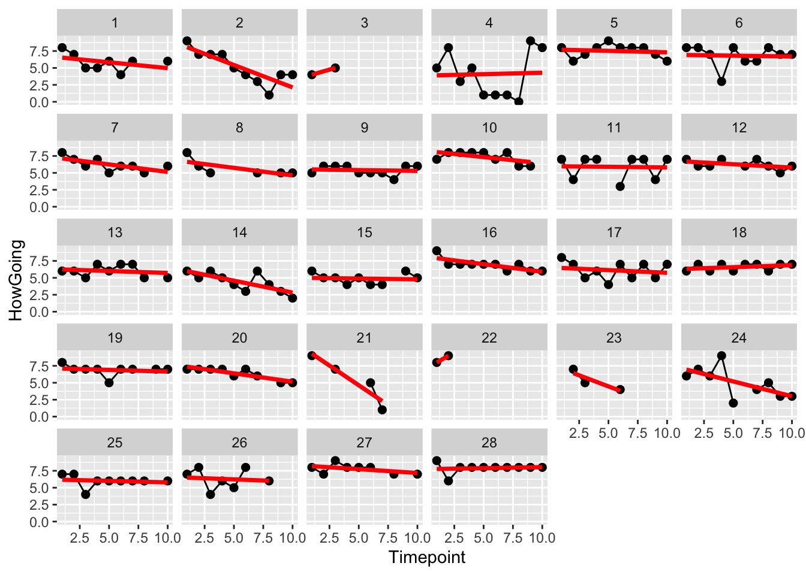
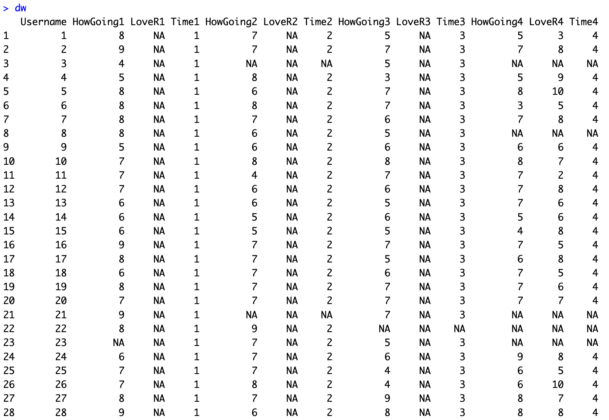
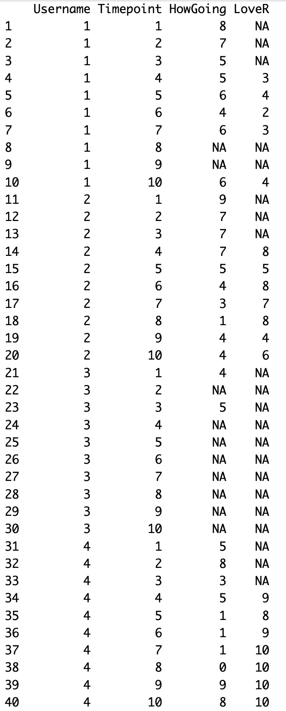
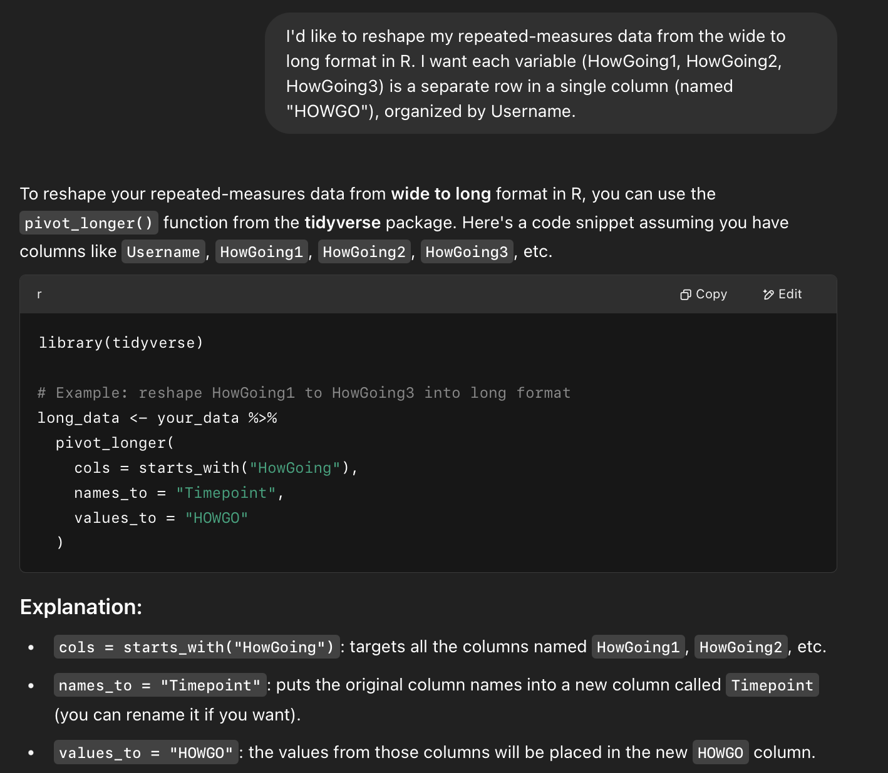
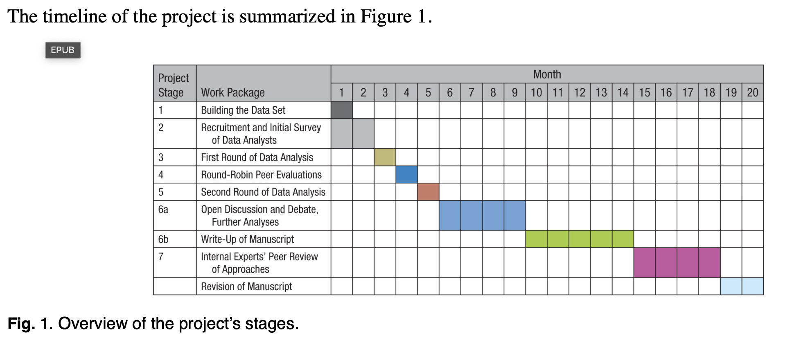
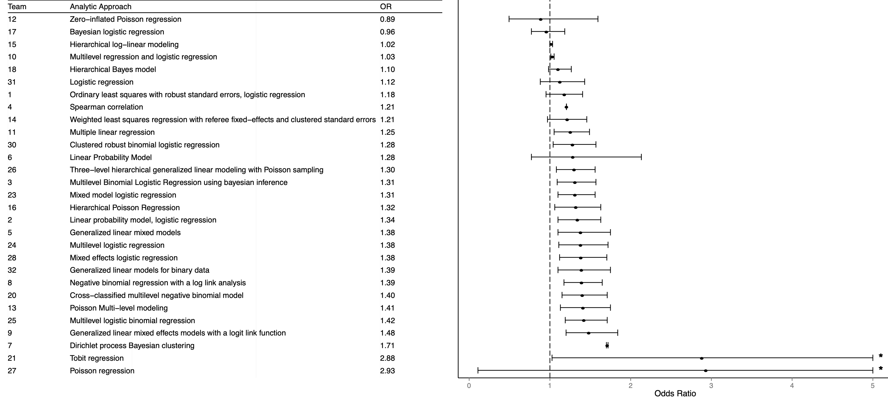

library(tidyverse)
library(lme4)
library(ggplot2)
library(ggthemes)
## Dataset : Wide Format
dw <- read.csv("~/Desktop/grad_class_wide.csv", stringsAsFactors = T)
## Converting Wide to Long Format
dl <- dw %>%
pivot_longer(
cols = c(starts_with("HowGoing"), starts_with("LoveR")),
names_to = c(".value", "Timepoint"),
names_pattern = "(HowGoing|LoveR)(\\d+)"
)
dl <- dl[,c(1, 12:14)]
d <- dl
## Some Data Cleaning
d$Username <- as.factor(d$Username)
d$Timepoint <- as.numeric(d$Timepoint)Lecture 12 | More Multilevel Models (MLM) and Not An Exam Debrief
Check-In : Multilevel Models (MLM)
- Some code is below that I will run, but we won’t see the output of.
- Okay, it’s modeling time.

Linear mixed model fit by REML ['lmerMod']
Formula: HowGoing ~ Timepoint + (Timepoint | Username)
Data: d
REML criterion at convergence: 839.5
Scaled residuals:
Min 1Q Median 3Q Max
-3.0948 -0.4597 0.1015 0.4900 3.8208
Random effects:
Groups Name Variance Std.Dev. Corr
Username (Intercept) 0.58001 0.7616
Timepoint 0.01546 0.1243 -0.16
Residual 1.75949 1.3265
Number of obs: 230, groups: Username, 28
Fixed effects:
Estimate Std. Error t value
(Intercept) 6.88277 0.23215 29.648
Timepoint -0.15593 0.03972 -3.926
Correlation of Fixed Effects:
(Intr)
Timepoint -0.597Some More Thoughts and Comments on MLM
Converting Data from Wide to Long
Wide Format : Each repeated measure is its own column; each row is an individual.

Long Format : Each row is an individual observation; each column is a variable.
fixed effects : repeat across rows (e.g., username; demographic & personality and other between-person variables)
random effects : change across rows (e.g., mood; emotion; reaction times; other within-person variables)

Often need to convert wide to long; it’s a pain. Professor Used ChatGPT for This :( and it was easier :)

Reporting the Results of MLM : It Gets Complicated
What fixed vs. random effects to include?
Random effects can be averaged into fixed effects, and both can be included in the model.
a person’s mood varies over the day (random effect)
the person’s mood tends to be higher than another person’s (fixed effect)
# the modelsummary function : https://francish.net/mlmusingr/MLM_Appendix_A.pdf
# install.packages("modelsummary")
library(modelsummary)
modelsummary(list("Random Intercept Model" = mlm, "Random Intercept\nFixed Slope Model" = mlm2, "Random Intercept\nRandom Slope Model" = mlm3),
stars = TRUE,
title = "Multilevel Model Regression Example")| Random Intercept Model | Random Intercept Fixed Slope Model | Random Intercept Random Slope Model | |
|---|---|---|---|
| + p < 0.1, * p < 0.05, ** p < 0.01, *** p < 0.001 | |||
| (Intercept) | 6.107*** | 6.862*** | 6.883*** |
| (0.197) | (0.254) | (0.232) | |
| Timepoint | -0.149*** | -0.156*** | |
| (0.032) | (0.040) | ||
| SD (Intercept Username) | 0.897 | 0.908 | 0.762 |
| SD (Timepoint Username) | 0.124 | ||
| Cor (Intercept~Timepoint Username) | -0.161 | ||
| SD (Observations) | 1.443 | 1.374 | 1.326 |
| Num.Obs. | 230 | 230 | 230 |
| R2 Marg. | 0.000 | 0.064 | 0.069 |
| R2 Cond. | 0.279 | 0.349 | 0.400 |
| AIC | 866.7 | 852.7 | 851.5 |
| BIC | 877.1 | 866.5 | 872.2 |
| ICC | 0.3 | 0.3 | 0.4 |
| RMSE | 1.38 | 1.30 | 1.24 |
Not an Exam Debrief
Activity and Discussion : Debrief of Team Work
One Dataset (and Psych 205 Assignment)
Our Class Analyses
29 Teams; 61 Analysts : Each team did what y’all did.
Activity : Round Robin Peer Review
Step 2 : Find your name; share your early ATHLETIC EXPERIENCES (growth mindset etc. etc.); then use the OSF LINK HERE to find your Assigned Team’s report.
Step 3 : Skim / review the report; fill out the columns for the below questions.
Data Cleaning This Team Did for Red Card Variable.
- Was this what you did? Something similar? Radically different? Something you’ve never heard of and might want to look into later?
Data Cleaning This Team Did for Race Variable.
Type of Model They Used.
What was the effect (was darker skin related to more or less red cards? Was this significant?)
Questions or Comments You Had About The Team’s Approach (e.g., what would you want / need to learn more about? Was there something cool they did that we should know about?)
Step 4 : Work with the members of your table to share your knowledge.
What did the assigned team you read about do and find?
What did you do and find?
What changes might you make to your own analyses based on what others have done?
Original Article :
Miscellaneous Materials :
Authors & Agenda : Part of the “Open Science” movement. Goal to develop better and more transparent systems of science.

- Key Findings :

Discussion Questions :
What practices can we carry into our own research?
What else seems relevant or important about the paper / this project?
Presentation
More MLM
Next Week : Final Project Draft (and PIZZA)
Put together a summary graph (or table) that illustrates some of the main ideas. If there was ONE PAGE to show people about your project, what would you put on that page?
Make it something people WANT to look at and can LEARN from.
No tiny font and giant margins!
People will remember 1-2 things about your project (± 2).
Bring whatever you have :) but be prepared to chat about your data and project and get feedback.
Psych department is paying (says they will reimburse me) for a PIZZA PARTY.